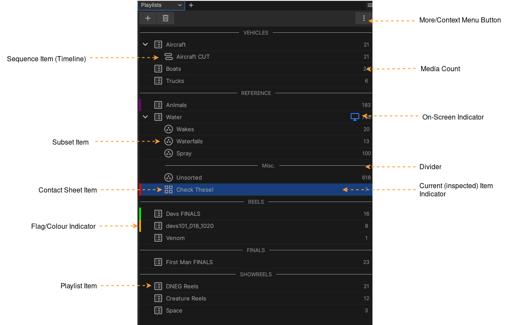

The Playlist Panel

The Playlists panel
Playlists パネルは、プレイリストを通じて Session にアクセスし、整理するためのインターフェースを提供します。プレイリストの階層構造は、小規模から非常に大規模なメディアコレクションまで簡単に整理できるように設計されており、プレイリスト内でメディア項目や Timeline の編集内容をサブグループとしてまとめることも可能です。
Note
xSTUDIO の Timeline 編集 (Sequence) は、常にプレイリストの子として存在します。プレイリストは Sequence 内のメディアのスーパーセット (母集団) であり、Sequence によって参照されるすべてのメディアに加えて、Sequence に含まれていないメディアも常に含まれます。
Note
「Session」という用語は、現在のすべてのプレイリスト、メディア、ノート、アノテーションなどの状態、つまりアプリケーションのすべてのデータコンテンツを指します。すべての Session は、ディスク上のファイルへの保存やファイルからの読み込みが可能です。
Getting Started
プレイリストの作成を開始するには、いくつかの方法があります：
More/Context メニューボタンを使用する (または panels 内でマウスを右クリックする) ことで、Playlists メニューにアクセスできます。
ファイルシステムからフォルダーをドラッグ＆ドロップすると、そのフォルダー名に沿って命名された Playlist が作成されます。
個々のメディアファイルを Playlist panels 内にドラッグ＆ドロップすると、デフォルト名で Playlist が作成されます。
「+」ボタンを使用すると、Playlist 作成メニューにアクセスできます。
Media List Panel から、コンテキストメニューを介してメディアを新しい Playlist にコピーまたは移動できます。
Inspecting Playlist Media
Playlist 内のメディアを表示するには、その Playlist 項目をシングルクリックするだけです。その項目が inspected (インスペクト対象) に設定され、Media List Panel にその Playlist のコンテンツが表示されるようになります。インスペクト対象の Playlist 項目はハイライトカラーで表示されることに注意してください。
Viewing Playlist Media
Playlist (または Subset、Contact Sheet、Sequence) 内のメディアの視聴を実際に開始するには、それを「on-screen (画面表示)」項目に設定する必要があります。これは、Playlists panels 内の項目をダブルクリックするだけで行えます。on-screen 項目は、panels 内の項目の右側に表示される画面アイコンによって示されます (上の図を参照)。on-screen 項目は inspected 項目 (Media List Panel にコンテンツが表示されている項目) とは異なる場合があることに注意してください。これは、Viewport で再生されている内容を妨げることなく、プレイリスト間でメディアをコピーまたは移動できるようにするためです。
Organising Playlists
Playlist 項目は、シンプルなドラッグ＆ドロップ操作で並べ替えることができます。
整理に役立つ Dividers (区切り線) を作成できます。Dividers を作成するには、コンテキストメニューまたはプラスボタンを使用してください。
コンテキストメニューには、Playlist や Dividers などの名前を変更するためのオプションが用意されています。
Playlist や Dividers を削除するには、ゴミ箱アイコンまたはコンテキストメニューを使用します。
Playlist や Subset などの 間 でメディアを移動またはコピーするには、Media List Panel でメディア項目を選択し、そこから Playlists panels 内の項目にドラッグ＆ドロップします。
Playlist Flags
Context Menu 内の Set Colour サブメニューを介して、Playlist、Subset、Contact Sheet などにカラーフラグを追加できます。このフラグはシンプルなインジケーターとして機能し、ユーザーが自身の目的に合わせて Session 内の注目すべき項目を色分けして管理するために使用できます。
xSTUDIO Subsets
Context Menu 内の Set Colour サブメニューを介して、Playlist、Subset、Contact Sheet などにカラーフラグを追加できます。このフラグはシンプルなインジケーターとして機能し、ユーザーが自身の目的に合わせて Session 内の注目すべき項目を色分けして管理するために使用できます。
xSTUDIO Subsets
Subset とは、特定の Playlist 内にあるメディアのコレクションです。この概念により、Playlist 内のメディアをさらに便利に分類することができます。Subset 内のメディアは、親 Playlist 内のメディア項目への参照にすぎないことに注意してください。したがって、Subset 内のメディアは常に親 Playlist にも存在し、特定のメディアへの変更 (たとえば、追加されたブックマークノートやアノテーション) は、Subset 内のメディアと親 Playlist のメディアの両方に反映されます。
Subset の作成と構築
「+」メニューから「Subset」を選択すると、現在選択されている Playlist に新しい Subset が追加されます。Playlist が選択されていない場合は、その Subset 用のデフォルトの親も作成されます。
More/Context メニューから Add New->Subset オプションを選択します。
Media List Panel で既存の Playlist 内のメディア項目を選択し、メニューオプションの Add Media To…->New Subset を使用します。
With a
Subset によって参照されているメディアが親 Playlist から削除された場合、そのメディアは Subset からも削除されます。ただし、その逆 は成り立ちません。Subset からメディアを削除しても、Playlist からは削除されません。
xSTUDIO Contact Sheets
Contact Sheet は Subset と非常によく似ていますが、Contact Sheet 内のすべてのメディアは、メディアの選択状態に関係なく Viewport の比較モードでアクティブになります。したがって、Contact Sheet の比較モードが「Grid」に設定されている場合、Contact Sheet 内のすべてのメディアが Grid レイアウトを使用して Viewport に表示されます。詳細については、Compare Modes のセクションを参照してください。
Dividers
「Add Playlists」ボタンから Dividers を追加できます。Dividers は、プレイリストコレクション内を整理するのに役立つ、ラベル付きのシンプルな区切りバーです。